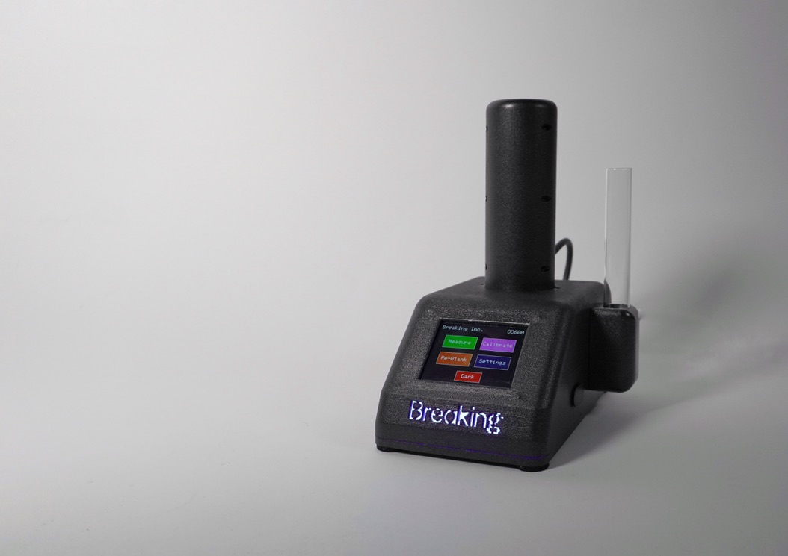
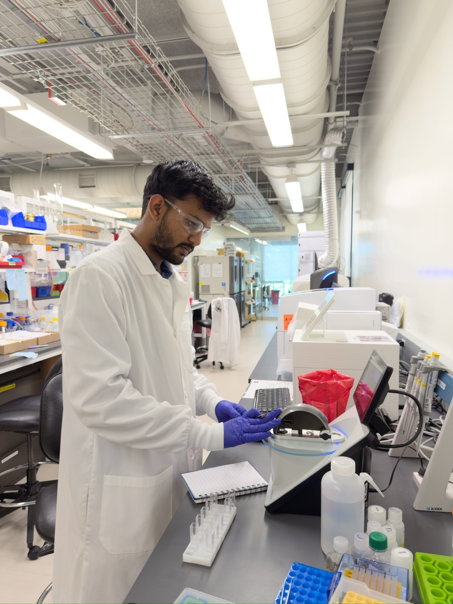

Biotech Instrumentation.
Six months as a mechatronics intern, building lab hardware from scratch. An optical-sensing device with embedded closed-loop control, and a precision heat chamber for plastic-degradation studies.

Robotics Intern
Cambridge, MA
Lab instrumentation
Optical sensing · Thermal
The brief.
I joined Breaking Inc. as a mechatronics intern and owned hardware from the first sketch to a build the scientists could actually run experiments on. The work crossed mechanical design, electronics, embedded firmware, and closed-loop control, and it moved fast. Prototype, measure, fix, repeat.
Optical-sensing device.
I built the device from a blank page, pairing optical sensing with embedded control. After a good number of prototype cycles, the closed-loop system held ±0.02 OD₆₀₀ accuracy, tight enough to trust the readings.
- Optical front-end paired with microcontroller-based acquisition and control.
- Closed-loop control algorithms for stable, repeatable readings.
- A tight prototyping loop (design, build, measure, refine) on the way to a lab-ready unit.
Precision heat chamber.
I engineered a precision heat chamber for plastic-degradation studies. I picked the materials, designed the enclosure geometry, and validated thermal stability at ±0.5 °C across repeated test cycles.
- Material selection and enclosure geometry for uniform, stable heating.
- Thermal validation across repeated cycles to confirm ±0.5 °C stability.
Integration & impact.
Both builds came down to getting sensors, microcontrollers, and closed-loop control working together as prototypes the lab could rely on. That improved reproducibility and cut data-acquisition time by 40%.
From the bench.

